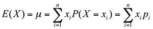

Expected value and mean
The mean of a numerical data set describes a 'typical' value. The expected value of a distribution has a similar interpretation and is also called the distribution's mean.
The expected value of a variable X is defined as a type of 'weighted average' of its possible values, with each value 'weighted' by the probability of it being obtained. The following formula gives a formal definition.

If the distribution is based on empirical probabilities from a discrete data set, the expected value of X is the same as the mean of this data set.
Investment fund return
The manager of an investment fund has come up with the following probabilities describing the distribution of returns from the fund (in $million) in the following year.
| Return, x | 6 | 4 | 2 | 0 | -2 |
| P(X = x) | 0.05 | 0.20 | 0.40 | 0.20 | 0.15 |
The expected return from the fund is:
E[X] = 6 × P(6) + 4 × P(4) + 2 × P(2) + 0 × P(0) + (-2) × P(-2)
= 6 × 0.05 + 4 × 0.20 + 2 × 0.40 + 0 × 0.20 - 2 × 0.15
= $1.6 million
TrustUs second hand car dealership
TrustUs is a second hand car dealership. Here are sales records from the last 500 business days.
| Number of cars sold | 0 | 1 | 2 | 3 | 4 | 5 | 6 |
| Number of days | 25 | 125 | 150 | 100 | 50 | 25 | 25 |
Let X be the number of cars sold that will be sold on the next day. The variable X is discrete, because it can only take on discrete (separate) whole numbers. Based on the previous sales records, we expect that X will have the following probability distribution.
| Cars sold in day, x | 0 | 1 | 2 | 3 | 4 | 5 | 6 |
| P(X = x) | 0.05 | 0.25 | 0.30 | 0.20 | 0.10 | 0.05 | 0.05 |
The probabilities here are empirical, calculated from the relative frequencies (25/500 = 0.05, etc). The mean (expected value) of this discrete variable is
E[X] = 0 × P(0) + 1 × P(1) + 2 × P(2) + ... + 6 × P(6)
= 0 × 0.05 + 1 × 0.25 + 2 × 0.3 + 3 × 0.2 + 4 × 0.1 + 5 × 0.05 + 6 × 0.05
= 2.4 cars
Note that the total number of cars sold in the previous 500 days was (0 on each of 25 days) plus (1 on each of 125 days) plus ... plus (6 on each of 25 days) giving a total of 1,200 cars. The average number of cars sold per day was therefore 1200/500 = 2.4 cars.
The expected number of cars sold per day is the same as the mean.
Cost of breakdowns
Service records at a manufacturing plant show that the number of machine breakdowns per week has the following probability distribution.
| Breakdowns, x | 0 | 1 | 2 | 3 | 4 | 5 |
|---|---|---|---|---|---|---|
| P(X = x) | 0.05 | 0.20 | 0.40 | 0.20 | 0.15 | 0.05 |
The expected number of breakdowns in a week is:
E[X] = 0 × P(0) + 1 × P(1) + 2 × P(2) + ... + 5 × P(5)
= 0 × 0.05 + 1 × 0.2 + 2 × 0.4 + 3 × 0.2 + 4 × 0.15 + 5 × 0.05
= 2.45
If each breakdown costs $200 to repair, the average weekly repair bill is:
E[repair bill] = 200 × 2.45 = $490